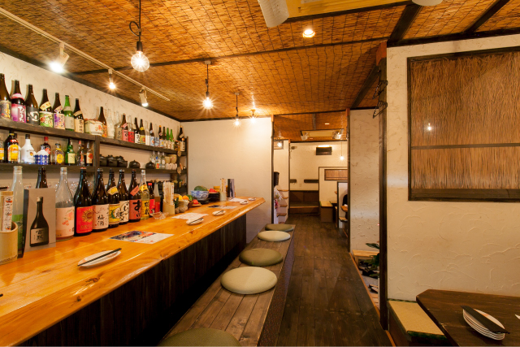

東加古川にある和食の居酒屋「ばん菜や」では、旬の素材を活かした美味しい一品料理をご用意しております。
お米はオーナーが所有している自家農園で栽培しているものを、
お野菜は地元の畑で採れた新鮮なものを使用。
お魚は姫路や家島の昼網で取れた新鮮なものを直送で仕入れています。
選りすぐりの素材で作る熱々の土鍋炊きご飯、彩り鮮やかなおばんざいは、当店ならではの逸品です。
「ばん菜や」はご宴会はもちろん、女子会にもおすすめ。
いろいろ楽しめるおばんざいや、素材の味をまるごと楽しめるカボチャのチーズフォンデュなど、会話も弾む美味しいお料理をご用意しております。
当店の人気メニューを楽しめるコースも種類豊富なラインナップ。シーンに合わせてお選びください。
